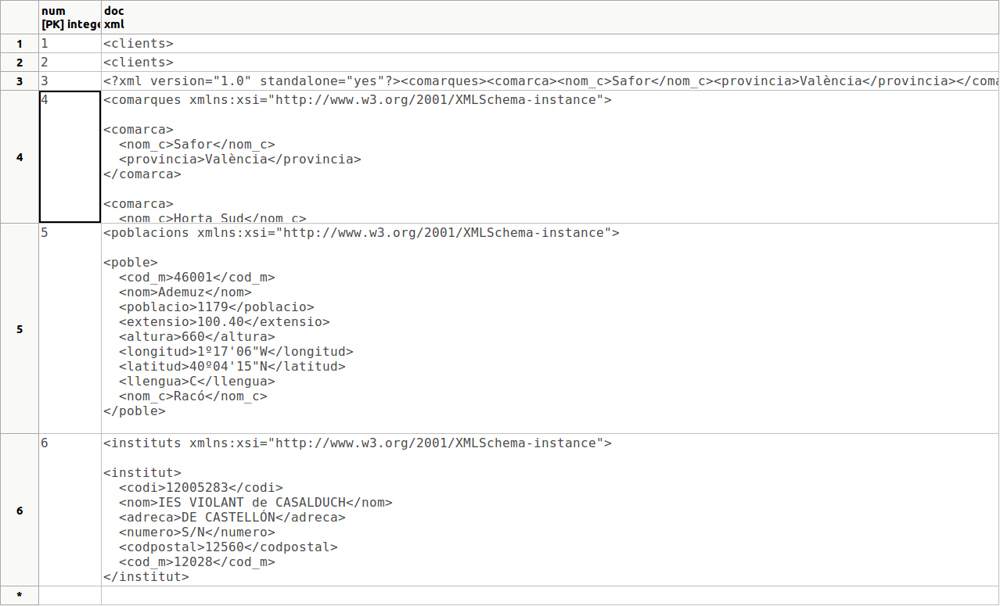

3.4 - Convertir taules senceres a XML
En l'últim exemple de l'apartat anterior havíem aconseguit forma un document XML a pertir de la taula Comarques i inserir-lo en un camp XML (de la taula P_XML). Aquella manera ens permet confeccionar al nostre gust l'estructura del XML. Per contra, és un poc laboriós.
Anem a veure ara dues funcions que ens permeten convertir una taula i una consulta, respectivament, a XML amb l'estructura que totes les columnes seran elements. No tindrem per tant tanta versatilitat com en l'apartat anterior. Però per contra la senzillesa és extrema.
TABLE_TO_XML
Sintaxi: table_to_xml(taula, tract_nul, format, espai_noms)
Descripció: converteix una taula en un document XML. El primer paràmetre és la taula a convertir. El segon (booleà) indica si s'inclouen els valors nuls com element buits. El tercer (booleà) implica el format que tindran els elements. El quart serveix per definir l'espai de noms; el podem deixar com una cadena nula ('').
Exemple:
Anem a fixar-nos en el tercer paràmetre. Si està a false, el nom de la taula serà l'element arrel, i per a cada fila crearà un element anomenat row, que inclourà tots els camps:
SELECT table_to_xml('COMARQUES', false, false, '');
ens donarà aquesta eixida:
En canvi si el tercer paràmetre està a true, traurà una successió d'element amb el mateix nom que la taula, amb els camps com a elements:
SELECT table_to_xml('COMARQUES', false, true, '');
ara l'eixida serà:
És a dir, de la primera manera el document està ben format, i de la segona és una successió d'elements.
Un exemple d'utilització (que aprofitarem per a introduir en la taula P_XML) seria intentar canviar el nom dels elements row per comarca . La solució podria ser utilitzar la funció replace() per a canviar el que volem. Només haurem d'anar en compte de convertir el document XML generat per TABLE_TO_XML a text, per poder utilitzar la funció replace, i després tornar a convertir-lo a XML. Introduirem també les taules POBLACIONS i INSTITUTS convertides en XML (substituint row per un més adequat)
En la següent imatge es mostra el contingut de la taula P_XML, on s'han ampliat les noves files per poder veure el contingut:

QUERY_TO_XML
Sintaxi: query_to_xml(sent_SQL, tract_nul, format, espai_noms)
Descripció: absolutament equivalent a l'anterior, però la font de les dades no serà una taula, sinó una sentència SQL.
Exemple:
I l'eixida seria aquesta:
Llicenciat sota la Llicència Creative Commons Reconeixement NoComercial CompartirIgual 2.5